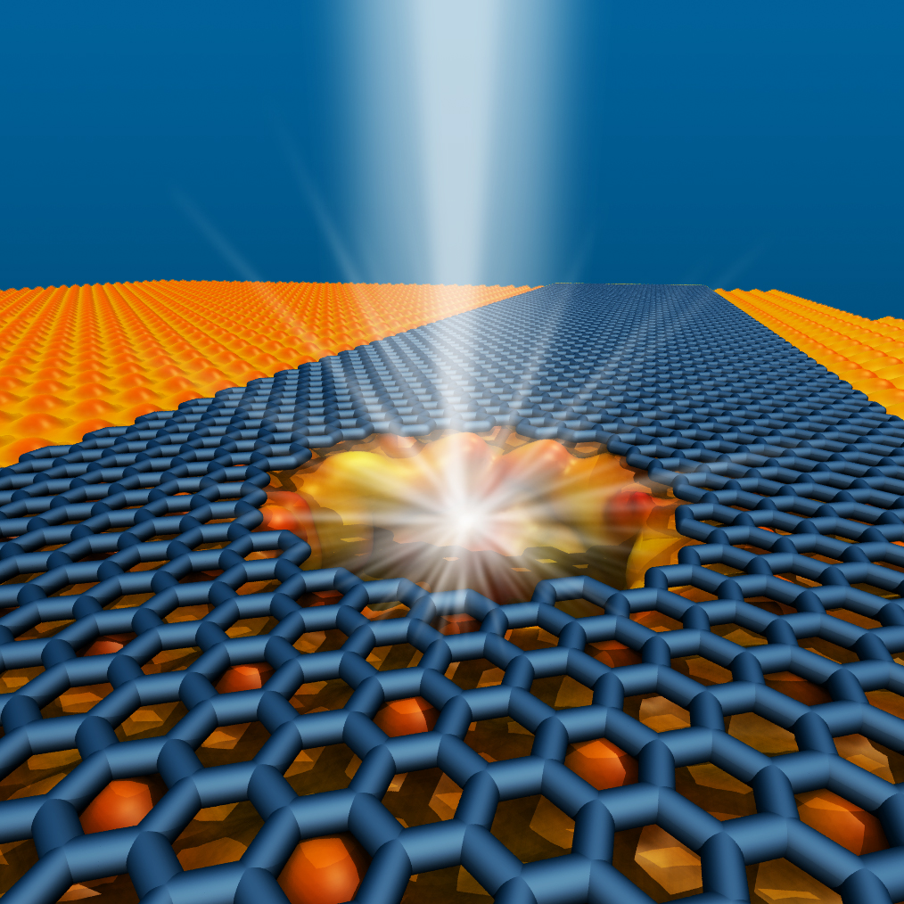
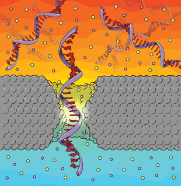
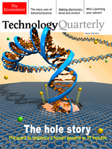
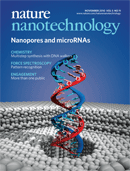
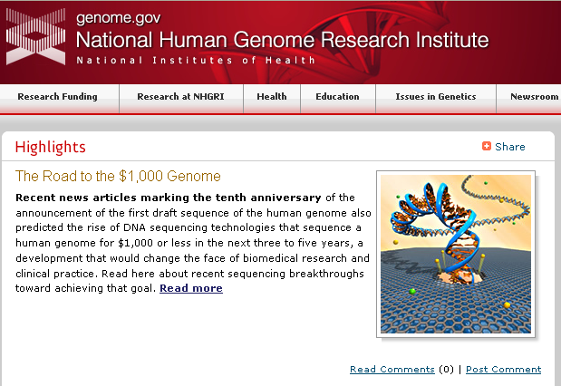
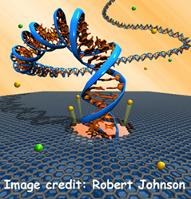

Come see our work at the Philly Science Festival Carnival on May 3, 2014.
The Carnival runs from 10am to 4pm, and our group will demonstrate our work at a booth between
21st and 22nd on Benjamin Franklin Parkway.
The Philadelphia science carnival features more than 175 exhibitors offering non-stop, family-friendly experiments,
interactive activities, games, and a packed line-up of live entertainment. Enjoy making slime, meeting live zoo
animals,
checking out the inner-workings of robots, taking a tour of a helicopter, extracting DNA from a strawberry, testing
a
"crime scene" for forensic evidence, and so much more!
For more information, please go to philasciencefestival.org
Marija Drndić Named 2014 APS Fellow
Professor Marija Drndić has been named an APS Fellow "For development of novel nanofabrication methods for
graphene
nanoelectronics and fast biomolecular analysis in solution."

Graphene nanoribbon-nanopore devices for DNA sequencing
Graphene-based nanopore devices are promising candidates for next-generation DNA sequencing. In this paper, we fabricated graphene nanoribbon-nanopore
(GNR-NP) sensors for DNA detection. GNR conductance was monitored in situ during electron irradiation-induced
nanopore
formation inside a transmission electron microscope (TEM). We show that GNR resistance increases linearly with
electron
dose and that GNR conductance and mobility decrease by a factor of ten or more when GNRs are imaged at relatively
high
magnification with a broad beam prior to making a nanopore. By operating the TEM in scanning TEM (STEM) mode, in
which
the position of the converged electron beam can be controlled with high spatial precision via automated feedback, we
were able to prevent electron beam-induced damage and make nanopores in highly conducting GNR sensors. This method
minimizes the exposure of the GNRs to the beam before and during nanopore formation. The resulting GNRs with
unchanged
resistances after nanopore formation can sustain microampere currents at low voltages (around 50 mV) in buffered
electrolyte solution and exhibit high sensitivity, with a large relative change of resistance upon changes of gate
voltage, similar to pristine GNRs without nanopores.
Selected press:
Penn News:
Penn
Produces Graphene Nanoribbons With Nanopores for Fast DNA Sequencing
ScienceDaily:
Graphene Nanoribbons With Nanopores Created
for Fast DNA Sequencing

In a recent ACS Nano paper,
"Differentiation of Short, Single-Stranded DNA Homopolymers in Solid-State
Nanopores", we show that small solid-state nanopores similar in size to protein nanopores, combined
with an optimized setup, can differentiate between single-stranded DNA homopolymers (with A, C, and T bases).
Selected press:
Penn News:
Penn
Research Makes Advance in Nanotech Gene Sequencing Technique
Genome Web:
UPenn
Team Shows Solid-state Nanopore Can Distinguish Different DNA Homopolymers
Graduate student
Matt Hickman received a
2012 NSF Graduate Student Fellowship. Matt�s
journey took him from high energy physics to his new passion for single molecule biophysics experiments using graphene
nanopores (March 2012).
Results from our collaboration with Ken Shepard's group at Columbia University were just published
in Nature Methods:
"Integrated
Nanopore Sensing Platform with Sub-Microsecond Temporal Resolution"
Selected press:
Penn News:
Penn
Works with Columbia Engineers to Increase Speed of Single-Molecule Measurements
Graduate student
Matt Puster received the
NSF-IGERT Graduate Nanotechnology
Fellowship (Feb 2012).
New NIH grant awarded to our lab to advance nanotechnology for DNA sequencing.
Selected press:
NIH News:
NHGRI
funds development of revolutionary DNA sequencing technologies
Penn News:
Penn
Researchers Awarded $1.5 Million to Advance Nanotechnology for Gene Sequencing
Former post-doc
Meni Wanunu started an Assistant Professor position at Northeastern
University (August 2011).
In a recent Nature Communications paper,
"Collective
fluorescence enhancement in nanoparticle clusters", we show that blinking nanorods (NRs) interact
with each other in a cluster, and the interactions affect the blinking statistics.
Selected press:
Penn News:
Penn
Physicists Observe Campfire Effect in Blinking Nanorod Semiconductors
Graduate student
Jessamyn Fairfield received an
NSF travel fellowship to attend the
Pan-American Advanced Studies Institute
(PASI) in Costa Rica on Scalable, Functional Nanomaterials (August 2011).
Post-doc
Chris Merchant received the
AAAS Science Policy Fellowship (July
2011).
Graduate student
Lauren Willis used high resolution transmission electron microscopy (TEM)
to image gold particles attached to peptides wrapped around individual single wall nantubes (SWNTs), which allowed
quantitative analysis of particle spacing and configuration to confirm the computational model of the complex. This
paper,
Computational Design of
Virus-Like Protein Assemblies on Carbon Nanotube Surfaces, was selected for the
cover of
Science.
We are seeking postdoc applications from outstanding candidates to join our effort on the
advancement of fundamental science of ion/biomolecule/nanopore systems and the development of new sequencing
technologies based on nanopores in graphene-based and silicon nitride-based platforms. Expertise in nanofabrication,
electron beam lithography, transmission electron microscopy, electrical measurements with nanopores and microfluidics,
biological sample preparation and handling, is a plus. Please send your interest to Prof. Drndić at
drndic@physics.upenn.edu.
Graduate student
Kim Venta received an
NSF Graduate Student Fellowship. Kim works at
an intersection of condensed matter physics, biophysics and chemistry on understanding and developing approaches for
biomolecule manipulation and analysis, including DNA sequencing, using graphene.

The Economist published an article in its March 10th 2011
issue featuring our work on DNA translocation through graphene nanopores, entitled
Nanopore sequencing: Towards the 15-minute
genome.
Our group is preparing presentations for the upcoming Biophysical Society and American Physical
Society meetings. At the annual BPS meeting,
Chris Merchant will give a talk on
DNA
translocations through nanopores created in graphene membranes on March 9th at 8:15 AM, and
Kimberly
Venta will present a poster in the poster session on March 9th from 10:30-12:30. At the APS March Meeting,
Jessamyn
Fairfield will give a talk about
Memory, Photoconductivity, and Traps in Semiconducting
Nanocrystal Arrays on March 23rd at 4:54 PM, and
Chris Merchant will give a talk about
DNA translocation through
graphene nanopores on March 23rd at 12:27 PM.
In our most recent paper,
"Discrimination of methylcytosine from hydroxymethylcytosine in DNA molecules",
we investigate the physical properties of DNA with modified cytosines. Molecular dynamics simulations reveal that polar
cytosine modifications affect internal base pair dynamics, while experimental evidence suggests a correlation between
the modified cytosine's polarity, DNA flexibility, and duplex stability. On the basis of these physical differences,
solid-state nanopores can rapidly discriminate among DNA fragments with mC or hmC modification by sampling a few hundred
molecules in the solution. This work has been reported in
Epigenetics Headlines and
Chemistry
Views.

Our new paper,
"Rapid
electronic detection of probe-specific microRNAs using thin nanopore sensors,", published in Nature
Nanotechnology and featured on the journal cover page, develops a platform for electronic detection of probe-hybridized
microRNAs. We find that reducing the thickness of the membrane containing the nanopore leads to increased signal
amplitudes from biomolecules, and reducing the diameter of the nanopore allows the detection and discrimination of small
nucleic acids based on differences in their physical dimensions. The work was done in collaboration with New England
Biolabs.
Selected press:
Penn News:
University
of Pennsylvania Scientists Develop Method for Detecting MicroRNA From Living Cells
AZoNano:
MicroRNA Detection Using Nanopores
Nano:
Detecting
microRNA from living cells
HealthCanal:
University
of Pennsylvania Scientists Develop Method for Detecting MicroRNA From Living Cells
R&D Magazine:
Scientists
develop a new method for detecting microRNA from living cells
Research from our group was presented at the
Workshop on Electronic Transport in Nanoengineered
Materials, at the University of Chicago September 16-18, 2010.
Marija Drndić gave a talk on "Nanogap
quantum dot photoconductivity",
Matt Puster presented the poster "Electronic Transport Imaged via Electrostatic
Force Microscopy in PbSe Nanocrystal Arrays", and
Lauren Willis and
Jessamyn Fairfield presented the
poster "Memory in Photoconductivity of Nanocrystal Arrays".
On August 24, 2010,
Marija Drndić attended the Recovery Innovation Report White House
event.
Vice President Joe Biden detailed the role the Recovery Act has played in
funding innovation.
Meni Wanunu and
Lauren Willis each gave a talk to high school teachers as part of the
Research Experience for Teachers program organized by the
Nano-Bio Interface
Center (NBIC) at Penn.

Highlights on our work are mentioned in the article
The
Road to the $1000 Genome - A Roundup of Sequencing Technology Developments by the National Human Genome Research
Institute (NHGRI) on August 3, 2010.
On July 30th, 2010,
Marija Drndić gave a talk to the Penn Summer Science Academy (
PSSA)
and the
Quarknet High School Students.
Read more about
Penn's high school outreach and
physics department outreach.

New research from our group on
graphene
nanopores was published in Nano Letters. Our paper,
DNA translocation through graphene
nanopores, demonstrates DNA translocation through synthetic nanopore materials with atomic thickness
and electrical addressability, which may serve as a step toward nanopore-based DNA sequencing. We envision
graphene-based nanopore devices that sense and control the electric potential locally at the nanopore and are capable of
measuring transverse current across the pore aperture.
Selected press:
Penn News:
First
Step Towards Electronic DNA Sequencing
Institute of Nanotechnology:
Nanoscale platform detects single DNA molecules
Graphene Times:
Penn
Researchers Provide First Step Towards Electronic DNA Sequencing
Nanotechnology Now:
Translocation Through Graphene Nanopores
EE Times:
Researchers
say carbon-based platform beats silicon for detection
ScienceDaily:
First Step Toward Electronic DNA
Sequencing
PhysOrg.com:
Translocation through graphene nanopores
IEEE Spectrum:
The
Race to Design a Nanopore Gene Sequencer Heats Up
Post-doc
Meni Wanunu gave an invited talk at the
Biosensing with
Channels summer school in Berder Island, France in August 2010. Graduate Student
Kimberly
Venta presented a poster titled "Graphene Nanopores" at this conference as well.
Post-doc
Meni Wanunu gave the UPenn Department of Physics and Astronomy
Condensed Matter Seminar on
April 28th, 2010.
Graduate student
Jessamyn Fairfield was awarded the
'Best Poster
Award' at the NaNaX 4:Nanoscience with Nanocrystals conference on
April 14th, 2010 in Tutzing, Germany.
 R
Research from our lab was featured on the History Channel show
The Works on July 24th, 2008
| |
THE WORKS: POWER TOOLS (Thursday, July 24th at 10pm ET/PT)
Since the Egyptians invented them three thousand years ago, power tools have
transformed the face of the earth. As we trace their evolution, we find out
their hidden commonalities: from power tools that slice mountains in half to
new breakthroughs in nanotechnology that enable them to literally split hairs.
Follow the life of a power tool as it goes from an idea to our garage shelf as
we discover how they're being used in surprising ways in sports, medicine and
art.
|
|
Invited lecture on
TEBAL: Nanosculpting devices with electrons in a
transmission electron microscope by
Marija Drndić at the
APS March Meeting 2008,
Focus session
Nanotechnology II, in New Orleans, March 10-14, 2008.
(Abstract)
Graduate student
Michael Fischbein was awarded the
2007 Graduate Student Research Excellence Award from the
Nano/Bio Interface Center. The associated 15-minutes presentation will
preceed this year's keynote lecture by
Charles Lieber during the
NanoDay@Penn
on October 24, 2007.
Interdisciplinary Workshop
Excited state processes in electronic and bio nanomaterials (ESP2007)
Los Alamos National Laboratory, October 1-4, 2007
Graduate student
Michael Fischbein was awarded the
Elias Burstein Prize in Condensed Matter Physics
for
his creative and prolific work on nanolithography and its technological applications.
Graduate student
Lauren Willis was awarded the
NSF-IGERT graduate fellowship.
Selected press releases about
TEBAL nanofabrication
technique:
IEEE Spectrum:
Power tools for making nanoscale objects, July 2007.
Nature Nanotechnology research highlight:
Electron beam lithography: Body-sculpting, May 2007.
PhysOrg.com:
Scientists Hand-Make Devices Smaller than 10 Nanometers, April 2007.
Selected previous events:
Werner B. Teutsch Prize awarded to
Lauren Willis (2006).
PECASE Award (Presidential Early Career Award for Scientists and Engineers)
awarded to
Marija Drndić (2005).
NSF-IGERT graduate fellowship awarded to
Michael Fischbein
(2004-2007).
Arnold M. Denenstein Prize awarded to
Michael Fischbein (2004).